# Ensure Giotto Suite is installed.
if(!"Giotto" %in% installed.packages()) {
devtools::install_github("drieslab/Giotto@suite")
}
# Ensure GiottoData, a small, helper module for tutorials, is installed.
if(!"GiottoData" %in% installed.packages()) {
devtools::install_github("drieslab/GiottoData")
}
library(Giotto)
# Ensure the Python environment for Giotto has been installed.
genv_exists = checkGiottoEnvironment()
if(!genv_exists){
# The following command need only be run once to install the Giotto environment.
installGiottoEnvironment()
}Set up Giotto environment
library(Giotto)
library(GiottoData)
# 1. set working directory
results_folder = 'path/to/result'
# Optional: Specify a path to a Python executable within a conda or miniconda
# environment. If set to NULL (default), the Python executable within the previously
# installed Giotto environment will be used.
my_python_path = NULL # alternatively, "/local/python/path/python" if desired.Dataset explanation
The CODEX data to run this tutorial can be found here. Alternatively you can use the getSpatialDataset to automatically download this dataset like we do in this example.
Goltsev et al. created a multiplexed datasets of normal and lupus (MRL/lpr) murine spleens using CODEX technique. The dataset consists of 30 protein markers from 734,101 single cells. In this tutorial, 83,787 cells from sample “BALBc-3” were selected for the analysis.
# download data to working directory
# use method = 'wget' if wget is available. This should be much faster.
# if you run into authentication issues with wget, then add " extra = '--no-check-certificate' "
getSpatialDataset(dataset = 'codex_spleen', directory = results_folder, method = 'wget')1. Giotto global instructions and preparations
# 1. (optional) set Giotto instructions
instrs = createGiottoInstructions(show_plot = FALSE,
save_plot = TRUE,
save_dir = results_folder,
python_path = my_python_path)
# 2. create giotto object from provided paths ####
expr_path = paste0(results_folder, "codex_BALBc_3_expression.txt.gz")
loc_path = paste0(results_folder, "codex_BALBc_3_coord.txt")
meta_path = paste0(results_folder, "codex_BALBc_3_annotation.txt")2. Create Giotto object & process data
# read in data information
# expression info
codex_expression = readExprMatrix(expr_path, transpose = F)
# cell coordinate info
codex_locations = data.table::fread(loc_path)
# metadata
codex_metadata = data.table::fread(meta_path)
## stitch x.y tile coordinates to global coordinates
xtilespan = 1344;
ytilespan = 1008;
# TODO: expand the documentation and input format of stitchTileCoordinates. Probably not enough information for new users.
stitch_file = stitchTileCoordinates(location_file = codex_metadata,
Xtilespan = xtilespan,
Ytilespan = ytilespan)
codex_locations = stitch_file[,.(Xcoord, Ycoord)]
# create Giotto object
codex_test <- createGiottoObject(expression = codex_expression,
spatial_locs = codex_locations,
instructions = instrs)
codex_metadata$cell_ID<- as.character(codex_metadata$cellID)
codex_test<-addCellMetadata(codex_test, new_metadata = codex_metadata,
by_column = T,
column_cell_ID = "cell_ID")
# subset Giotto object
cell_meta = pDataDT(codex_test)
cell_IDs_to_keep = cell_meta[Imaging_phenotype_cell_type != "dirt" & Imaging_phenotype_cell_type != "noid" & Imaging_phenotype_cell_type != "capsule",]$cell_ID
codex_test = subsetGiotto(codex_test,
cell_ids = cell_IDs_to_keep)
## filter
codex_test <- filterGiotto(gobject = codex_test,
expression_threshold = 1,
feat_det_in_min_cells = 10,
min_det_feats_per_cell = 2,
expression_values = c('raw'),
verbose = T)
codex_test <- normalizeGiotto(gobject = codex_test,
scalefactor = 6000,
verbose = T,
log_norm = FALSE,
library_size_norm = FALSE,
scale_feats = FALSE,
scale_cells = TRUE)
## add gene & cell statistics
codex_test <- addStatistics(gobject = codex_test,expression_values = "normalized")
## adjust expression matrix for technical or known variables
codex_test <- adjustGiottoMatrix(gobject = codex_test,
expression_values = c('normalized'),
batch_columns = 'sample_Xtile_Ytile',
covariate_columns = NULL,
return_gobject = TRUE,
update_slot = c('custom'))
## visualize
spatPlot(gobject = codex_test,point_size = 0.1,
coord_fix_ratio = NULL,point_shape = 'no_border',
save_param = list(save_name = '2_a_spatPlot'))
Show different regions of the dataset
spatPlot(gobject = codex_test,
point_size = 0.2,
coord_fix_ratio = 1,
cell_color = 'sample_Xtile_Ytile',
legend_symbol_size = 3,
legend_text = 5,
save_param = list(save_name = '2_b_spatPlot'))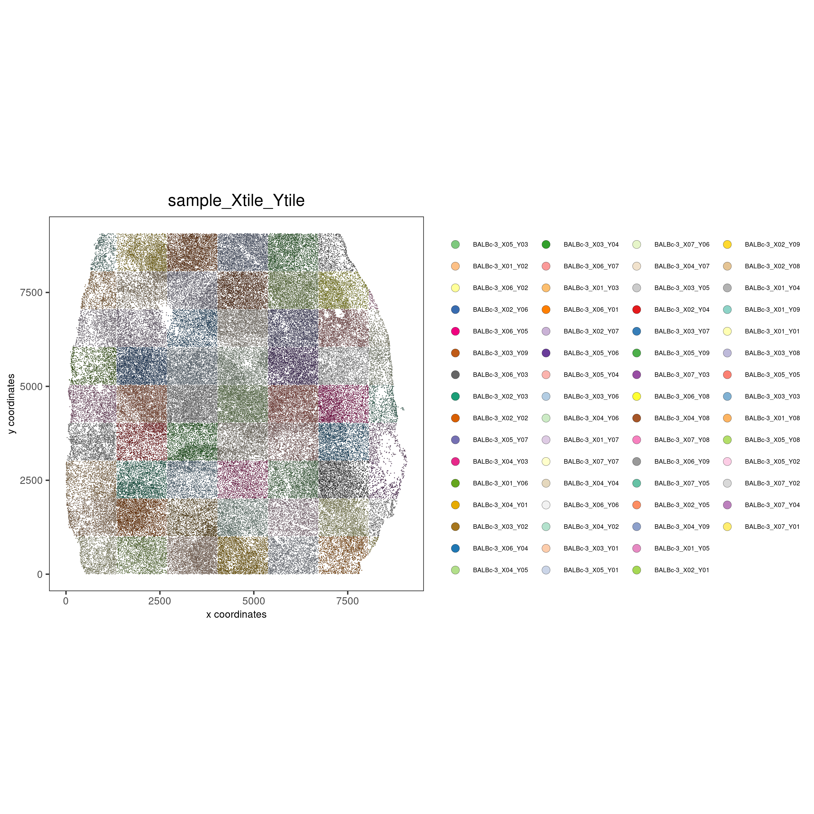
3. Dimension reduction
# use all Abs
# PCA
codex_test <- runPCA(gobject = codex_test,
expression_values = 'normalized',
scale_unit = T,
method = "factominer")
signPCA(codex_test,
scale_unit = T,
scree_ylim = c(0, 3),
save_param = list(save_name = '3_a_spatPlot'))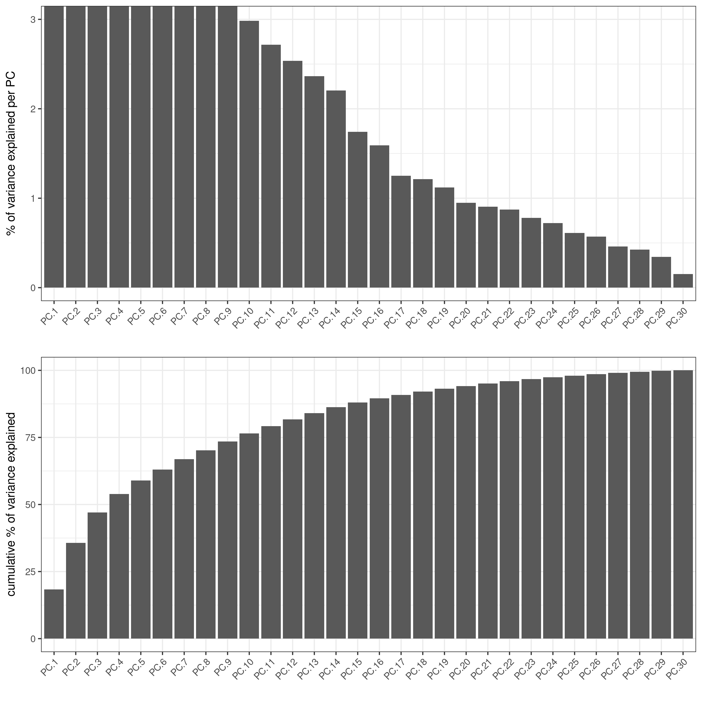
plotPCA(gobject = codex_test,
point_shape = 'no_border',
point_size = 0.2,
save_param = list(save_name = '3_b_PCA'))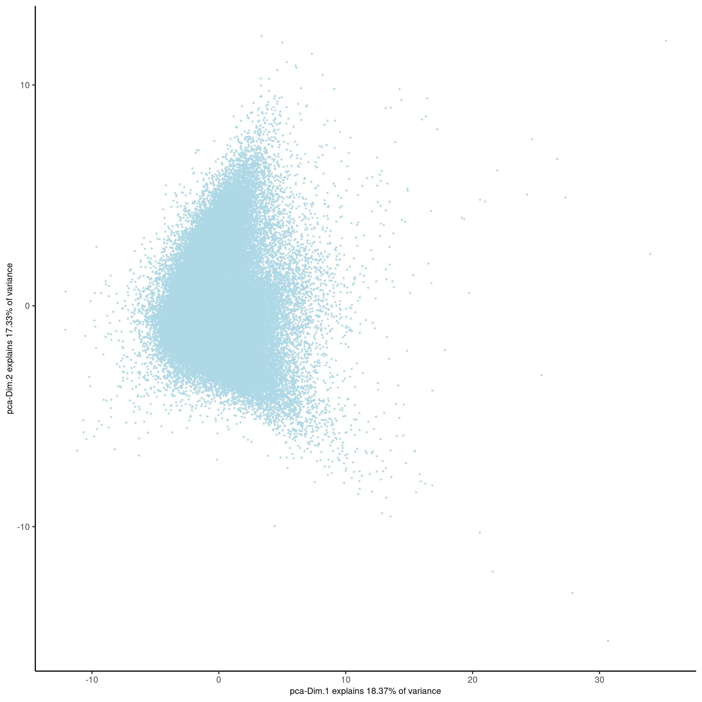
# UMAP
codex_test <- runUMAP(codex_test,
dimensions_to_use = 1:14,
n_components = 2,
n_threads = 12)
plotUMAP(gobject = codex_test,
point_shape = 'no_border',
point_size = 0.2,
save_param = list(save_name = '3_c_UMAP'))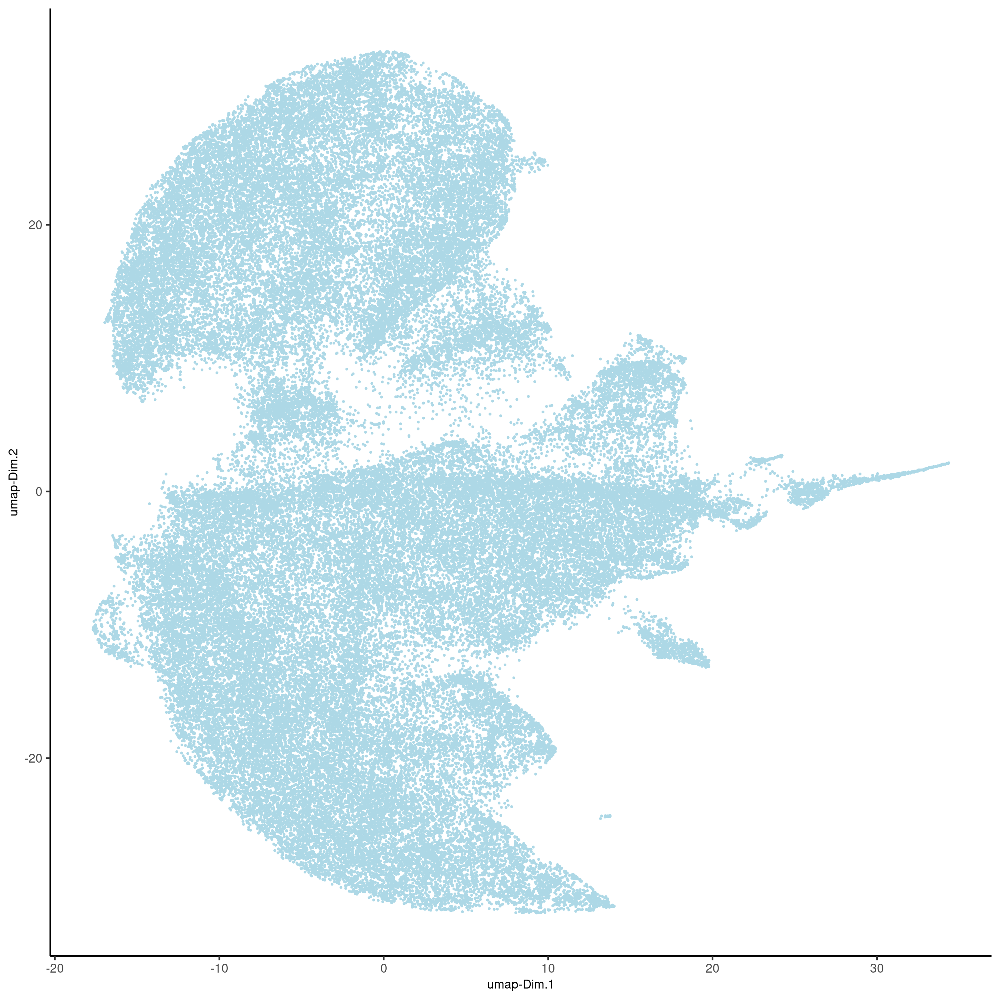
4. Cluster
## sNN network (default)
codex_test <- createNearestNetwork(gobject = codex_test,
dimensions_to_use = 1:14,
k = 20)
## 0.1 resolution
codex_test <- doLeidenCluster(gobject = codex_test,
resolution = 0.5,
n_iterations = 100,
name = 'leiden')
codex_metadata = pDataDT(codex_test)
leiden_colors = GiottogetDistinctColors(length(unique(codex_metadata$leiden)))
names(leiden_colors) = unique(codex_metadata$leiden)
plotUMAP(gobject = codex_test,
cell_color = 'leiden',
point_shape = 'no_border',
point_size = 0.2,
cell_color_code = leiden_colors,
save_param = list(save_name = '4_a_UMAP'))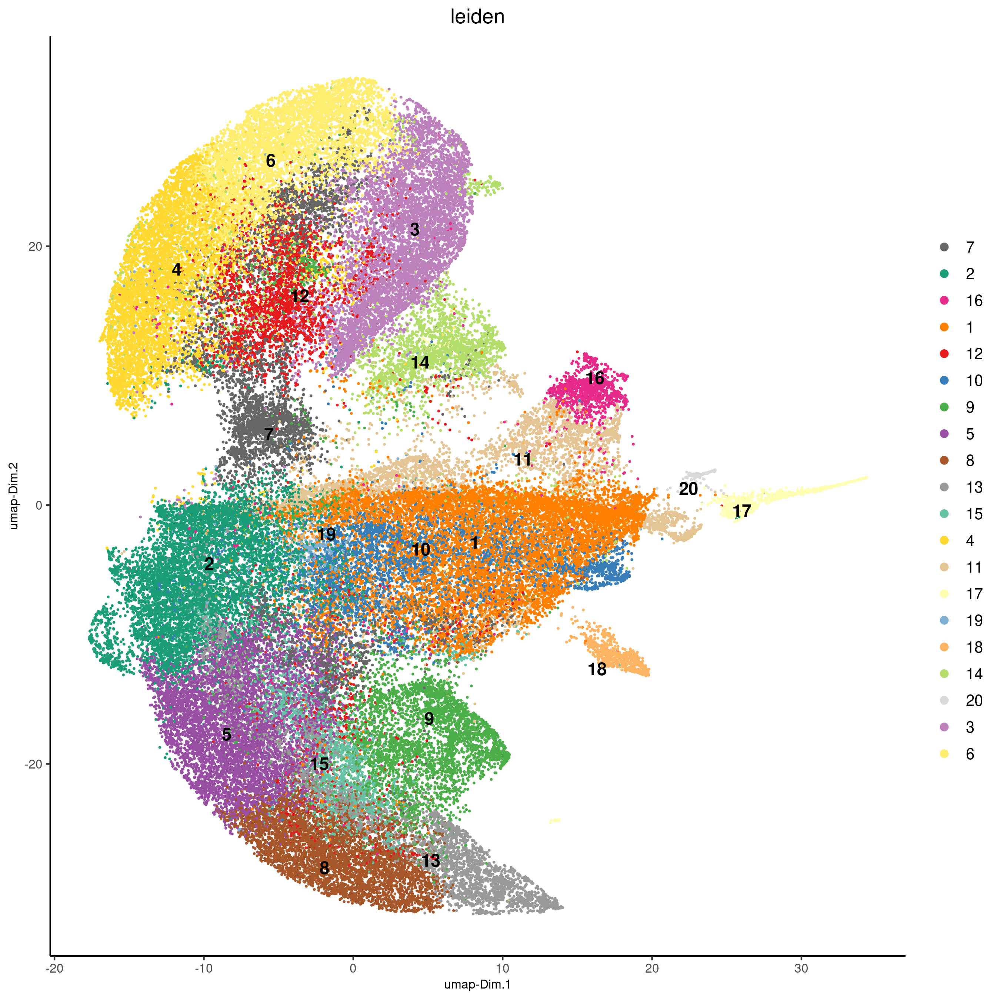
spatPlot(gobject = codex_test,
cell_color = 'leiden',
point_shape = 'no_border',
point_size = 0.2,
cell_color_code = leiden_colors,
coord_fix_ratio = 1,
label_size =2,
legend_text = 5,
legend_symbol_size = 2,
save_param = list(save_name = '4_b_spatplot'))
5. Co-visualize
spatDimPlot2D(gobject = codex_test,
cell_color = 'leiden',
spat_point_shape = 'no_border',
spat_point_size = 0.2,
dim_point_shape = 'no_border',
dim_point_size = 0.2,
cell_color_code = leiden_colors,
plot_alignment = c("horizontal"),
save_param = list(save_name = '5_a_spatdimplot'))
6. Differential expression
cluster_column = 'leiden'
markers_scran = findMarkers_one_vs_all(gobject=codex_test,
method="scran",
expression_values="normalized",
cluster_column=cluster_column,
min_feats=3)
markergenes_scran = unique(markers_scran[, head(.SD, 5), by="cluster"][["feats"]])
plotMetaDataHeatmap(codex_test,
expression_values = "normalized",
metadata_cols = c(cluster_column),
selected_feats = markergenes_scran,
y_text_size = 8,
show_values = 'zscores_rescaled',
save_param = list(save_name = '6_a_metaheatmap'))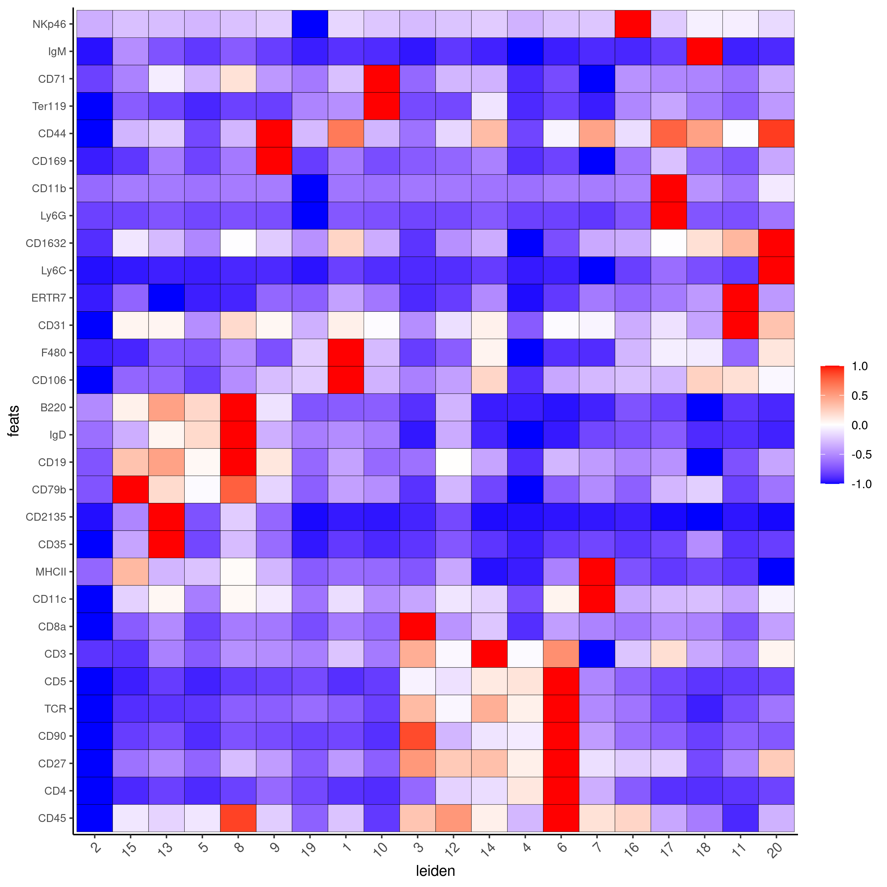
topgenes_scran = markers_scran[, head(.SD, 1), by = 'cluster']$feats
violinPlot(codex_test,
feats = unique(topgenes_scran)[1:8],
cluster_column = cluster_column,
strip_text = 8,
strip_position = 'right',
save_param = list(save_name = '6_b_violinplot'))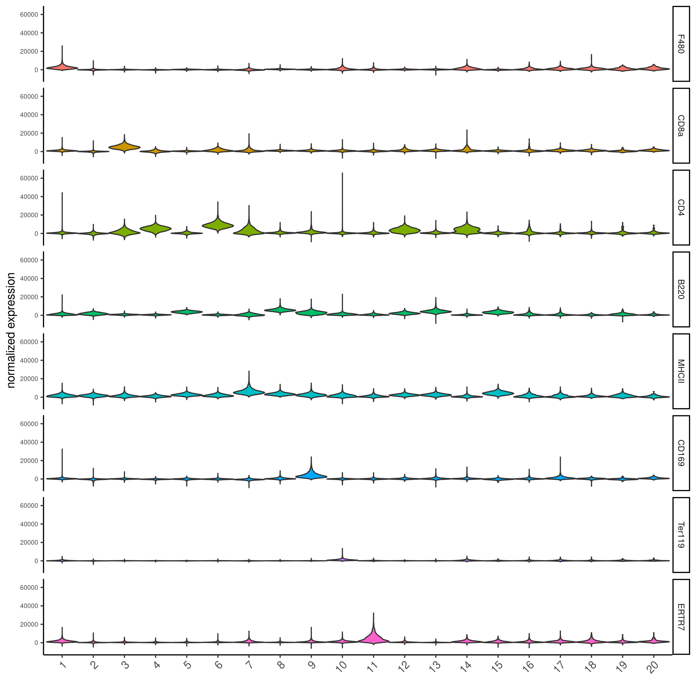
# gini
markers_gini = findMarkers_one_vs_all(gobject = codex_test,
method = "gini",
expression_values = "normalized",
cluster_column = cluster_column,
min_feats=5)
markergenes_gini = unique(markers_gini[, head(.SD, 5), by = "cluster"][["feats"]])
plotMetaDataHeatmap(codex_test,
expression_values = "normalized",
metadata_cols = c(cluster_column),
selected_feats = markergenes_gini,
show_values = 'zscores_rescaled',
save_param = list(save_name = '6_c_metaheatmap'))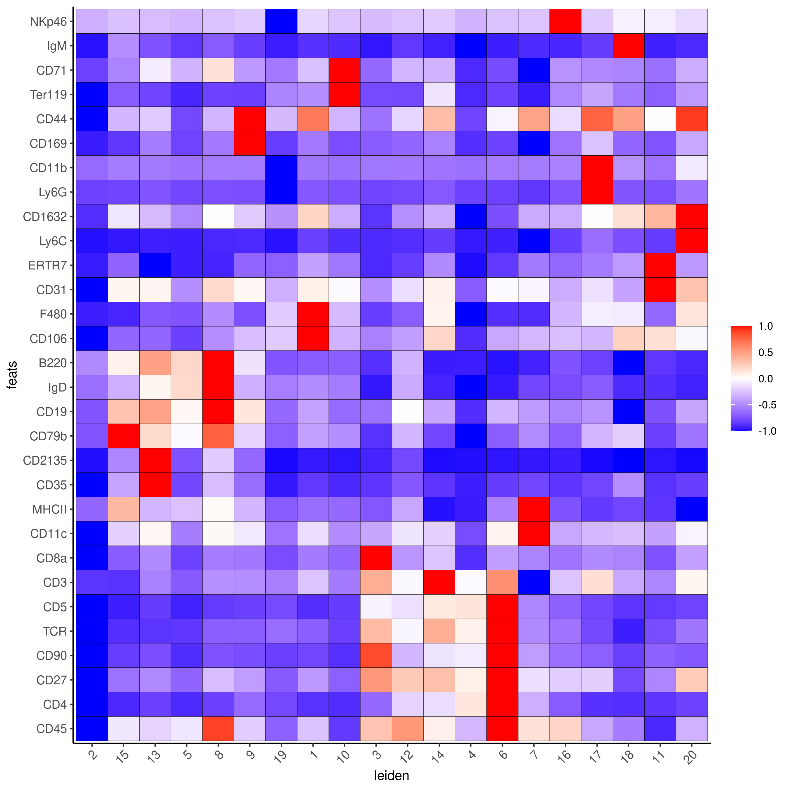
topgenes_gini = markers_gini[, head(.SD, 1), by = 'cluster']$feats
violinPlot(codex_test,
feats = unique(topgenes_gini),
cluster_column = cluster_column,
strip_text = 8,
strip_position = 'right',
save_param = list(save_name = '6_d_violinplot'))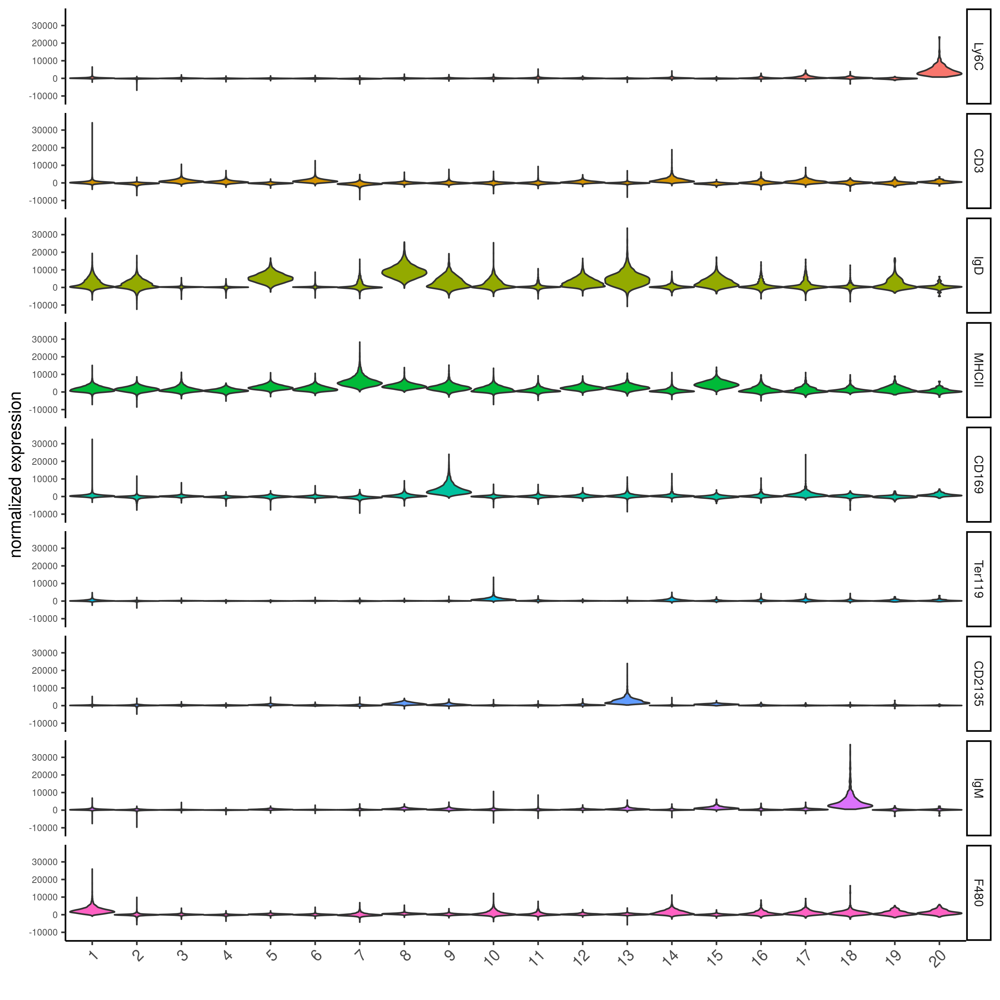
7. Cell type annotation
clusters_cell_types<-c("naive B cells","B cells","B cells","naive B cells","B cells",
"macrophages","erythroblasts","erythroblasts","erythroblasts","CD8 + T cells",
"Naive T cells","CD4+ T cells","Naive T cells", "CD4+ T cells","Dendritic cells",
"NK cells","Dendritic cells","Plasma cells","endothelial cells","monocytes")
names(clusters_cell_types) = c(2,15,13,5,8,9,19,1,10,3,12,14,4,6,7,16,17,18,11,20)
codex_test = annotateGiotto(gobject = codex_test,
annotation_vector = clusters_cell_types,
cluster_column = 'leiden', name = 'cell_types')
plotUMAP(gobject = codex_test,
cell_color = 'cell_types',
point_shape = 'no_border',
point_size = 0.2,
show_center_label = F,
label_size = 2,
legend_text = 5,
legend_symbol_size = 2,
save_param = list(save_name = '7_a_umap_celltypes'))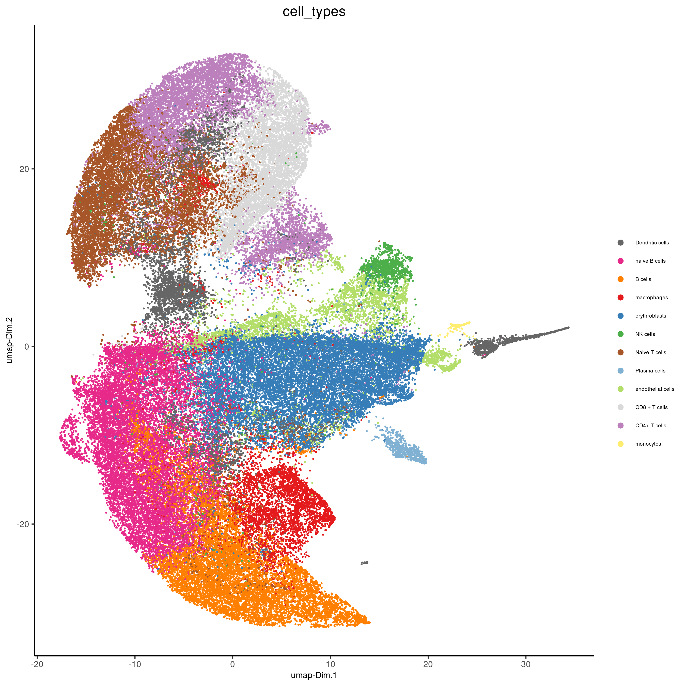
Or, this dataset comes with the imaging phenotype annotation
plotUMAP(gobject = codex_test,
cell_color = 'Imaging_phenotype_cell_type',
point_shape = 'no_border',
point_size = 0.2,
show_center_label = F,
label_size = 2,
legend_text = 5,
legend_symbol_size = 2,
save_param = list(save_name = '7_b_umap'))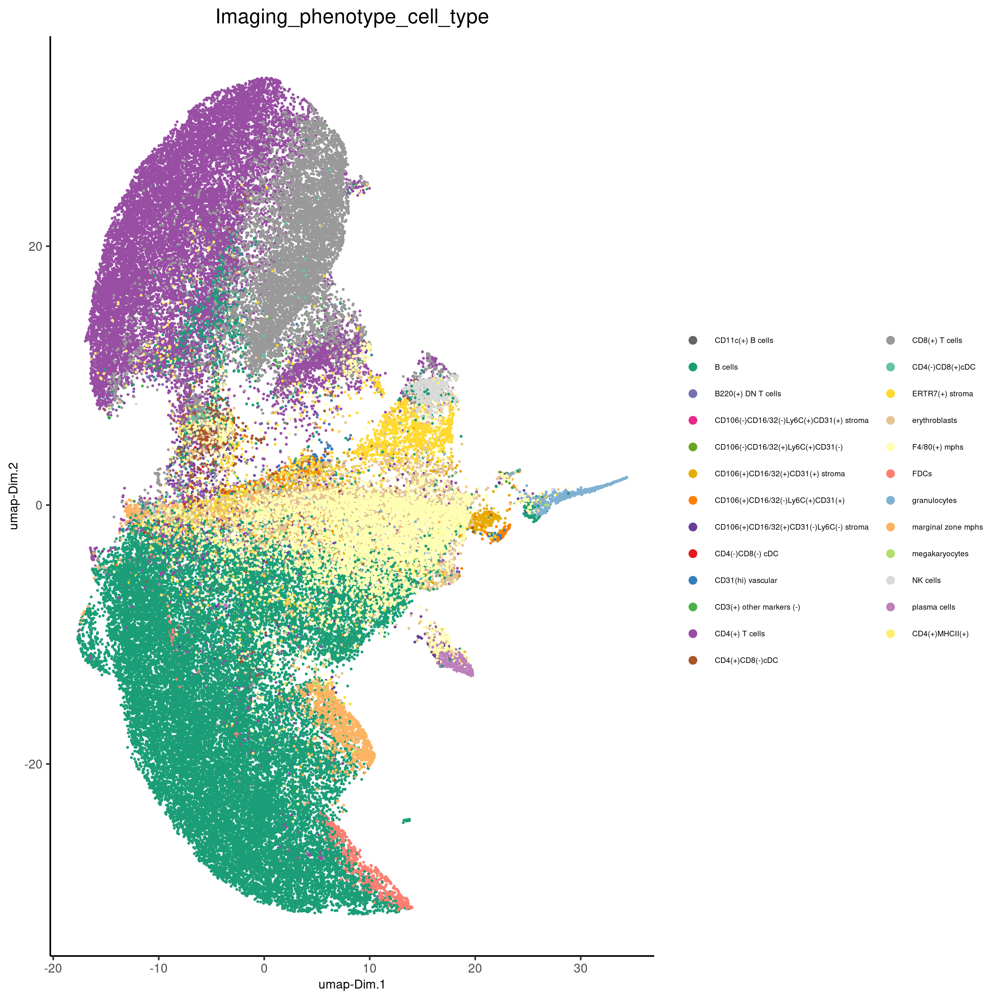
spatPlot(gobject = codex_test,
cell_color = 'Imaging_phenotype_cell_type',
point_shape = 'no_border',
point_size = 0.2,
coord_fix_ratio = 1,
label_size = 2,
legend_text = 5,
legend_symbol_size = 2,
save_param = list(save_name = '7_c_spatplot'))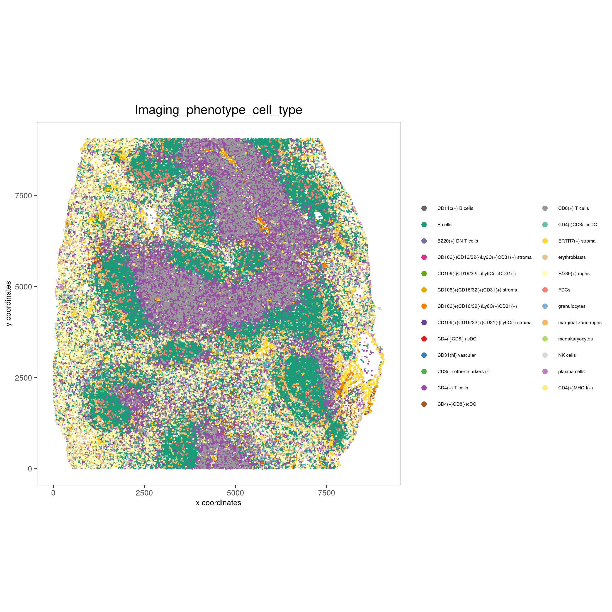
8. Visualize cell types and gene expression in selected zones
cell_metadata = pDataDT(codex_test)
subset_cell_ids = cell_metadata[sample_Xtile_Ytile=="BALBc-3_X04_Y08"]$cell_ID
codex_test_zone1 = subsetGiotto(codex_test,
cell_ids = subset_cell_ids)
plotUMAP(gobject = codex_test_zone1,
cell_color = 'Imaging_phenotype_cell_type',
point_shape = 'no_border',
point_size = 1,
show_center_label = F,
label_size = 2,
legend_text = 5,
legend_symbol_size = 2,
save_param = list(save_name = '8_a_umap'))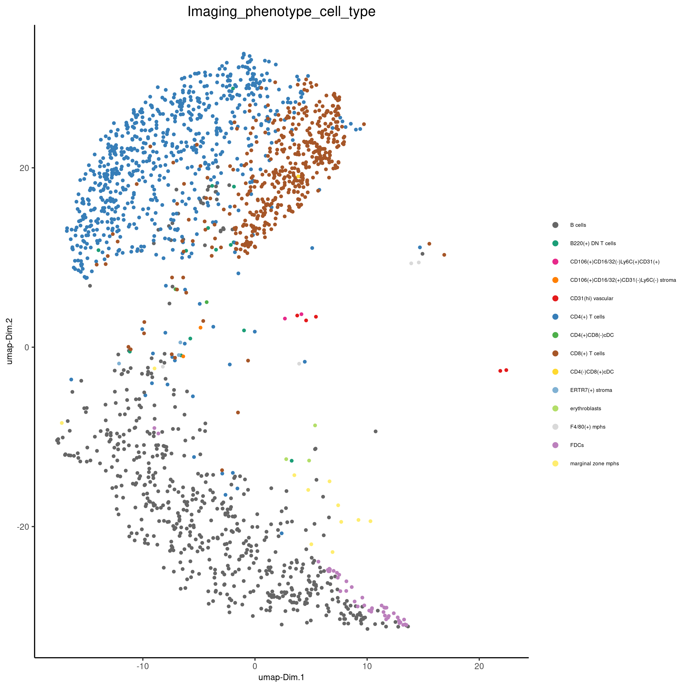
spatPlot(gobject = codex_test_zone1,
cell_color = 'Imaging_phenotype_cell_type',
point_shape = 'no_border',
point_size = 1,
coord_fix_ratio = 1,
label_size = 2,
legend_text = 5,
legend_symbol_size = 2,
save_param = list(save_name = '8_b_spatplot'))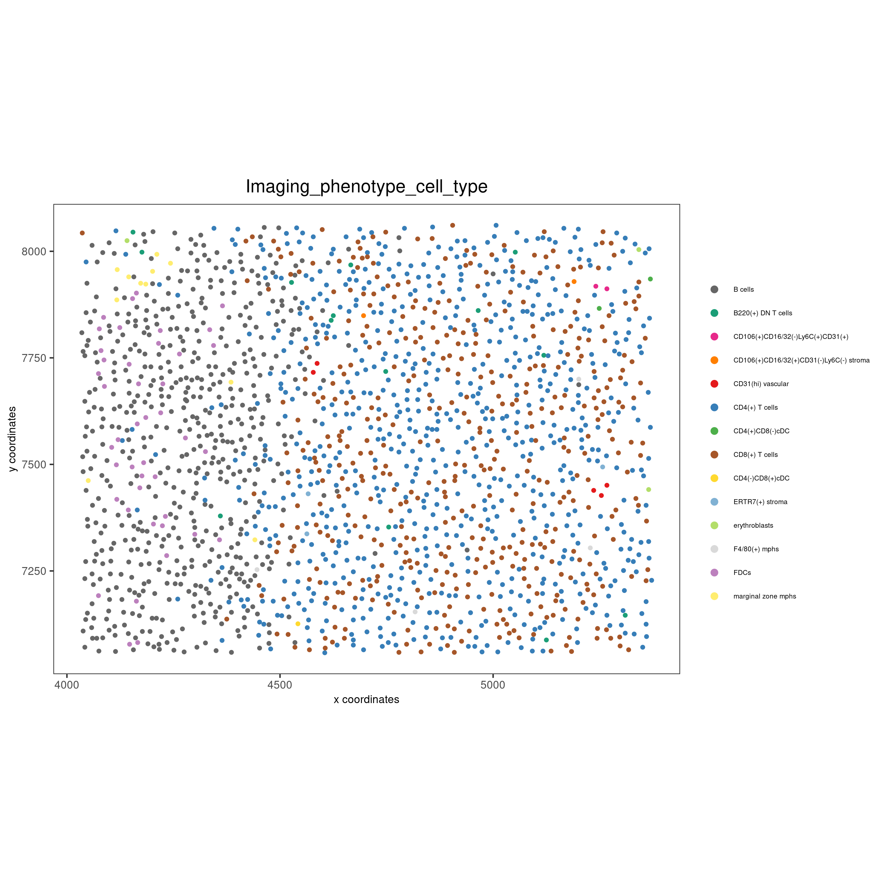
spatDimFeatPlot2D(codex_test_zone1,
expression_values = 'scaled',
feats = c("CD8a","CD19"),
spat_point_shape = 'no_border',
dim_point_shape = 'no_border',
cell_color_gradient = c("darkblue", "white", "red"),
save_param = list(save_name = '8_c_spatdimplot'))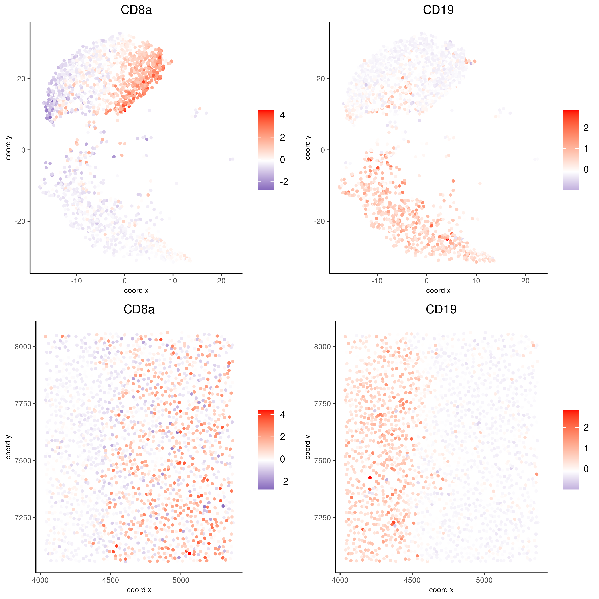
Test on another region:
cell_metadata = pDataDT(codex_test)
subset_cell_ids = cell_metadata[sample_Xtile_Ytile=="BALBc-3_X04_Y03"]$cell_ID
codex_test_zone2 = subsetGiotto(codex_test, cell_ids = subset_cell_ids)
plotUMAP(gobject = codex_test_zone2,
cell_color = 'Imaging_phenotype_cell_type',
point_shape = 'no_border',
point_size = 1,
show_center_label = F,
label_size = 2,
legend_text = 5,
legend_symbol_size = 2,
save_param = list(save_name = '8_d_umap'))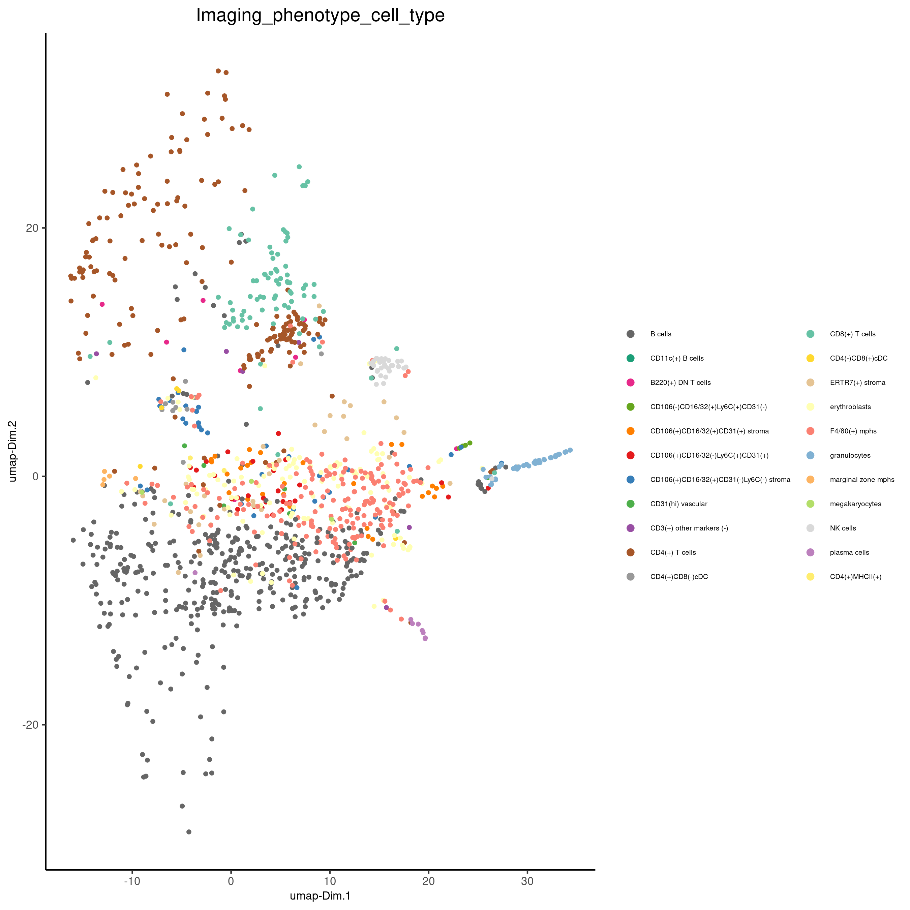
spatPlot(gobject = codex_test_zone2,
cell_color = 'Imaging_phenotype_cell_type',
point_shape = 'no_border',
point_size = 1,
coord_fix_ratio = 1,
label_size = 2,
legend_text = 5,
legend_symbol_size = 2,
save_param = list(save_name = '8_e_spatPlot'))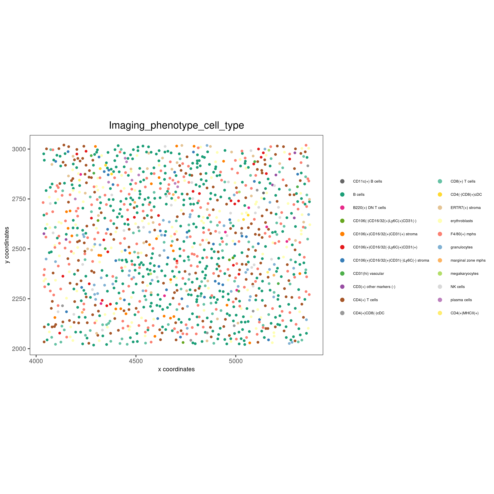
spatDimFeatPlot2D(codex_test_zone2,
expression_values = 'scaled',
feats = c("CD4", "CD106"),
spat_point_shape = 'no_border',
dim_point_shape = 'no_border',
cell_color_gradient = c("darkblue", "white", "red"),
save_param = list(save_name = '8_f_spatdimgeneplot'))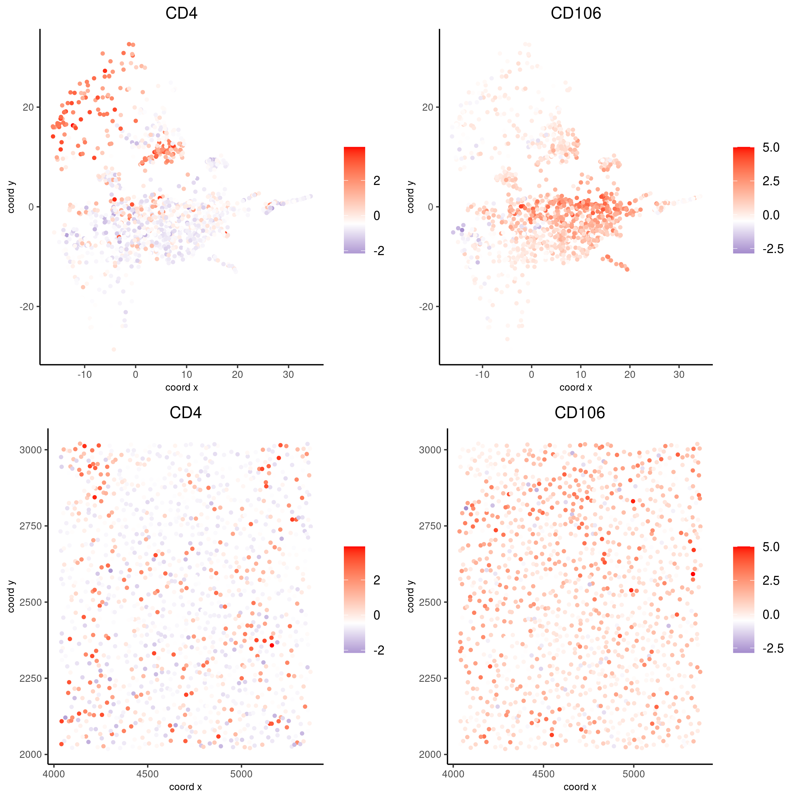